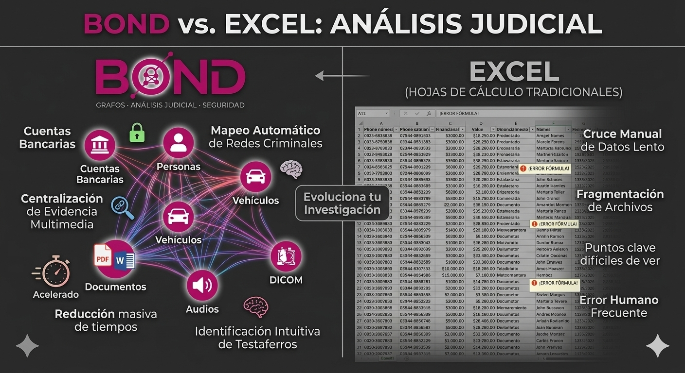
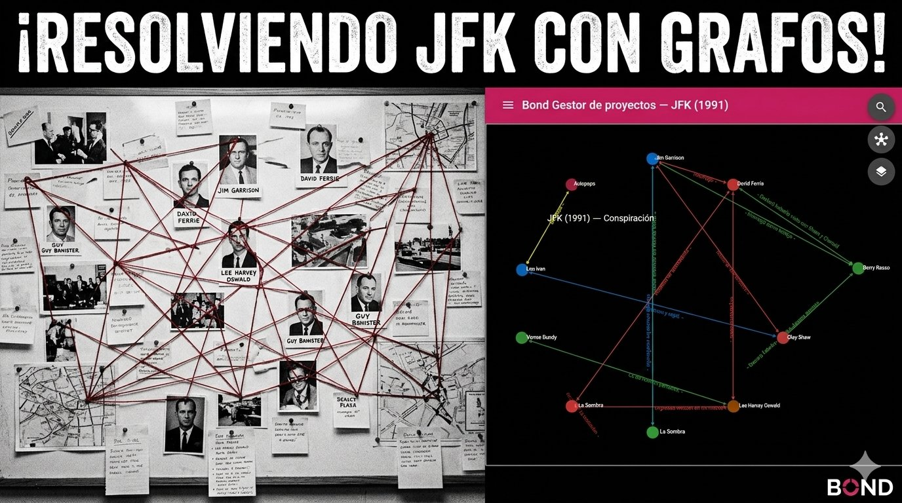

🧑⚖️
Personas
Sospechosos, testigos y testaferros identificados en el grafo con sus vínculos directos.
nodo · personaBond combina grafos de relaciones, evidencia multimedia centralizada (documentos, audios, video, DICOM) y línea de tiempo judicial para que un caso complejo se vea —y se pruebe— en una sola pantalla.
Bond mapea automáticamente redes criminales: cada persona, vehículo, cuenta, documento o audio es un nodo. Cada transacción, llamada o vínculo es una arista. Los puntos clave dejan de estar escondidos en planillas.
Sospechosos, testigos y testaferros identificados en el grafo con sus vínculos directos.
nodo · personaAutos, camionetas y flotas vinculados a personas, empresas y movimientos.
nodo · vehículoTransacciones y triangulaciones trazadas como aristas entre cuentas y titulares.
arista · transacciónPDF y Word adjuntos a los nodos: pericias, escritos y legajos siempre a mano.
PDF · WordEscuchas y testimonios asociados a eventos y personas dentro del proyecto.
audio · eventoVisor de imágenes integrado para autopsias y estudios complementarios del caso.
imagen · periciaVideos y línea de tiempo de eventos: qué pasó, cuándo y quién estaba vinculado.
timelineLa topología del grafo revela intermediarios y estructuras de integración.
análisis de redLas hojas de cálculo fragmentan el caso, propagan errores de fórmula y obligan a cruzar datos a mano. Bond centraliza la evidencia multimedia y acelera el análisis.

En Bond cada expediente es un caso con su propio grafo: personas, empresas, lugares y objetos conectados por sus vínculos. Los eventos del expediente — declaraciones, allanamientos, pericias, audiencias — se registran sobre nodos o sobre conexiones, y pueden pasarse de un nodo a una conexión y viceversa a medida que la investigación avanza y se entiende mejor dónde pertenece cada hecho.
Cada expediente reúne su grafo, su evidencia y su cronología en un único lugar consultable.
Allanamientos, declaraciones o pericias registrados sobre la persona, lugar u objeto al que corresponden.
Hechos que pertenecen al vínculo —una transacción, una llamada, un traslado— viven sobre la conexión misma.
Si la investigación revela que un hecho corresponde a otro elemento, el evento se pasa del nodo a la conexión o viceversa, sin perder su historia.
Bond es un sistema completo y ya funcionando: grafo de relaciones, evidencia multimedia, línea de tiempo y administración de equipos y casos.
Lienzo colaborativo para conectar personas, empresas, vehículos y cuentas. Zoom, agrupamientos, búsqueda y presentación del caso en una sola pantalla.
Proyectos, relaciones, eventos, documentos, audios, videos e imágenes forenses organizados por caso, con accesos por usuario y equipo.
Qué pasó, cuándo pasó y quién estaba vinculado: la cronología del caso construida sobre la misma evidencia del grafo.
Gestión de usuarios, permisos y catálogos para que cada equipo vea solo los casos que le corresponden.
Imágenes reales de la carpeta imagenes/ del proyecto Bond.

El clásico panel de corcho con fotos e hilos rojos, replicado como grafo digital consultable: Bond Gestor de proyectos — JFK (1991).
Lista de reproducción con el sistema en acción: grafos de investigación, seguimiento de expedientes y análisis criminal en tiempo real.
Por seguridad, Bond no está disponible en internet: se instala dentro de la red privada de tu institución y solo es accesible desde ella. Tus casos y tu evidencia nunca salen de tu infraestructura.
El sistema vive en tus propios servidores y solo responde dentro de tu red interna. Nada se expone a la web pública.
Instalamos y configuramos Bond en tu infraestructura, con tus usuarios, equipos y casos listos para trabajar.
Capacitamos a tu equipo de investigación para pasar del corcho y las planillas al grafo desde el primer caso.